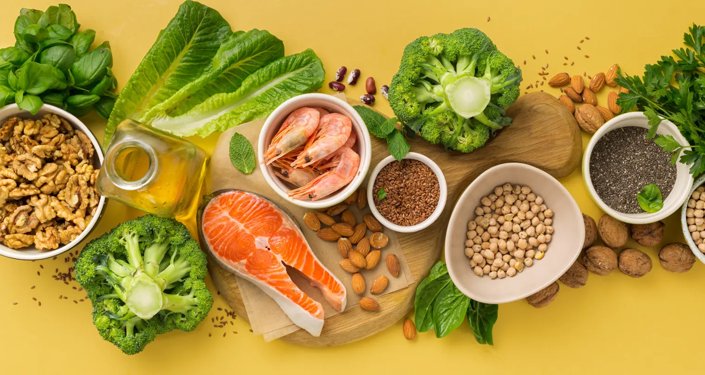

Gizi Seimbang untuk Ibu Hamil
Selama hamil, kebutuhan gizi ibu meningkat karena tubuh harus memenuhi kebutuhan dirinya sendiri sekaligus mendukung pertumbuhan dan perkembangan janin. Gizi seimbang adalah kombinasi menu makanan sehari-hari yang mengandung seluruh zat gizi yang dibutuhkan tubuh. Tidak ada satu bahan makanan yang mengandung semua zat gizi, sehingga ibu hamil perlu mengonsumsi aneka ragam makanan.

Tambahan Energi dan Protein
Angka kecukupan gizi bagi perempuan usia 19–49 tahun berkisar 2150–2250 kkal dan protein 60 gram per hari. Pada ibu hamil normal diperlukan tambahan energi sebesar 180–300 kkal dan protein mencapai 30 gram per hari. Kebutuhan ini dipenuhi melalui makanan sehari-hari, bukan dengan menggandakan porsi secara berlebihan.
Pedoman Isi Piringku
Isi Piringku adalah pedoman gizi seimbang dari Kementerian Kesehatan RI yang menggantikan konsep 4 Sehat 5 Sempurna. Dalam setiap kali makan, 50 persen piring diisi sayur dan buah, sedangkan 50 persen lainnya diisi makanan pokok dan lauk pauk. Pedoman ini juga menganjurkan konsumsi 8 gelas air setiap hari, aktivitas fisik 30 menit setiap hari, dan mencuci tangan dengan sabun sebelum serta sesudah makan.
Jenis Makanan yang Dianjurkan
- Makanan pokok: sumber karbohidrat dan tenaga, seperti beras, jagung, sagu, umbi-umbian, kentang, dan produk olahan gandum.
- Lauk pauk: sumber protein, utamakan protein hewani seperti ikan, telur, daging, dan susu untuk mendukung pertumbuhan janin.
- Sayur dan buah: sumber vitamin, mineral, dan serat. Konsumsi sayuran hijau minimal 3 porsi per hari.
- Garam beryodium: untuk mencegah gangguan akibat kekurangan yodium.
Protein Hewani untuk Cegah Stunting
Kekurangan energi kronik (KEK) pada ibu hamil dapat meningkatkan kemungkinan melahirkan bayi dengan berat badan lahir rendah (BBLR) dan berisiko stunting. Salah satu cara mencegahnya adalah memastikan piring makan ibu hamil kaya protein hewani seperti ikan, telur, daging, dan susu, karena protein hewani berperan penting dalam pertumbuhan jaringan janin. Kebutuhan ini disesuaikan dengan kondisi dan budaya makan setempat, termasuk pemanfaatan bahan pangan lokal.
Kebiasaan Sehat Selama Kehamilan
Ibu hamil dianjurkan makan 3 kali makanan utama ditambah 1–2 kali makanan selingan dalam sehari, sesuai anjuran porsi makan ibu hamil. Selain itu, jaga kebersihan makanan dan minuman, cukupi cairan, dan pantau kenaikan berat badan secara teratur. Untuk ibu hamil dengan kekurangan energi kronik (KEK), diperlukan tambahan asupan energi sekitar 500 kkal per hari agar kenaikan berat badan tercapai.
Sumber
- Kehamilan – 1000 Hari Pertama Kehidupan — Kementerian Kesehatan RI
- Isi Piringku, Panduan Kebutuhan Gizi Seimbang Harian — Kementerian Kesehatan RI
- Isi Piringku: Pedoman Makan Kekinian Orang Indonesia — Kementerian Kesehatan RI
- Poster Isi Piringku Kaya Protein Hewani untuk Ibu Hamil — Kementerian Kesehatan RI
Terakhir diperbarui: 11 Oktober 2026